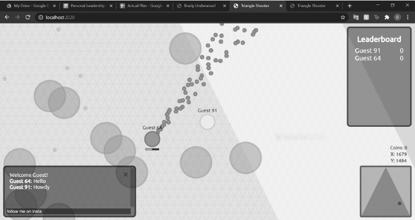

Node.js Multiplayer Shooter
In this project I am utilizing Node.js and Socket.io to create a competitive online game. The main difference between this and my minigames project is that this will have client-side prediction along with two game loops, one for animation and one for physics updates, in order to limit the amount of visible latency.
It is set in a triangle shaped map and the goal is to collect as many coins as you can in your own home base. You can pick up coins from around the map and if killed you will drop all your coins. I would also like to add multiple classes to have more replayability.
Socials: